Intro
Greetings! 🌟 I'm Rushit Chandegara, a passionate DevOps Engineer currently at Csuite ERP Pvt Ltd. With a strong foundation in Computer Engineering and multiple certifications in DevOps, Linux, and web security, I am dedicated to building, releasing, and configuring software for cloud-based applications.
Over the past 2+ years, I have successfully designed and implemented automated Jenkins CI/CD pipelines to ensure seamless continuous software delivery. My expertise extends to using Docker, Docker Swarm, and Microservices for efficient development processes. I have extensively utilized the AWS stack, including EC2, Auto Scaling, ECS, Lambda, Elastic Beanstalk, S3, EBS, EFS, RDS, VPC, Route 53, CloudFront, IAM, WAF, Key Management Service, Certificate Manager, CloudWatch, CloudFormation, CloudTrail, SQS, SNS, CodeCommit, CodePipeline, CodeBuild, CodeDeploy, Billing, kinesis, to manage, scale, and monitor applications. Additionally, I have configured the ELK stack and Glowroot for effective log analytics and application performance monitoring. You can explore these Project.
I collaborate closely with development and operations teams to maintain the quality, reliability, and security of software using a diverse set of tools such as Git, Bitbucket, AWS CodeCommit, Maven, Buckminster, Apache, Nginx, Tomcat, Ansible, Terraform, and CloudFormation. My proficiency in managing databases like MongoDB, PostgreSQL, MySQL, and Redis ensures optimized data storage and access. I am always eager to learn new technologies and apply them to solve real-world problems. Let's connect, share insights, and explore exciting opportunities in the DevOps community!
Work Experience
C-suite ERP Pvt. Ltd. - Ahmedabad
DevOps Engineer || July 2022 – Present
Responsibilities
• ☁️AWS Cloud Architecture: Designed new architectures for a lift-and-shift cloud solution on AWS.
• 🔧Infrastructure Automation: Utilized Terraform for provisioning and Ansible for configuration.
• 🚀High Availability: Set up an application load balancer with 3 nodes across multi-AZ, ensuring disaster recovery, high availability, and enhanced performance.
• 🔄CI/CD Pipelines: Automated CI/CD pipelines with Jenkins, reducing manual work by 100% and accelerating production processes.
• 🌐Web Server Management: Configured and managed Nginx and Apache web servers, migrating 8+ servers and setting up 15+ servers with optimized performance and minimal downtime.
• 🔒Security Enhancements: Improved security, reducing breach risk by 100% using SonarQube, WAF, OWASP ZAP, and implementing geo-location-wise IP block systems.
• 🔑Access Management: Proficient in SSH key rotation, managing server login keys, and handling AWS login access.
• 💵Cost Optimization: Reduced monthly costs by $4000 by eliminating unnecessary resources.
• 📈Server Uptime: Maintained 99% uptime for a network of 45+ Linux servers monitored by CloudWatch, Nagios, Grafana, and ELK.
• 🛠️Patch Management: Experienced in performing patch updates across production, staging, and test servers for security and stability.
Zignuts Technolab - Gandhinagar
DevOps Intern || Jan 2022 – July 2022
Responsibilities
• Application Deployment 🚀: Hands-on experience deploying Laravel, Angular, ReactJS, and Node.js applications using Docker containers with Jenkins. Managed and scaled these containerized applications with AWS Elastic Container Service (ECS).
• Docker & Docker Swarm 🐳: Created and managed Docker & Docker Swarm deployment pipelines for custom application images in the cloud.
• Database Management 🗄️: Proficiently managed a diverse range of databases including MongoDB, PostgreSQL, MySQL, and Redis, showcasing expertise in data storage, access, and performance optimization.
• Web Servers & Configuration Management 🌐: Hands-on experience with web servers like Apache, Nginx, and Tomcat. Skilled in configuration management using Ansible and Terraform for Infrastructure as Code (IaC).
• Shell Scripting 📝: Developed and maintained shell scripts for automating routine tasks and enhancing operational efficiency.
• Domain Migration 🌍: Managed domain migration projects, ensuring smooth transitions and minimal downtime for web services.
• Process Optimization 🤝: Collaborated with development and operations teams to streamline processes and enhance deployment efficiency.
• Documentation 📚: Created comprehensive documentation for deployment guides.
• Troubleshooting & Root Cause Analysis 🔍: In-depth knowledge in troubleshooting errors and issues, with strong skills in root cause analysis.
Project
Cloud-Based Business Management Software
|| • Jira • || • Bitbucket • || • Jenkins • || • OWASP • || • Nginx • || • Apache • || • Linux servers • || • AWS services • || • Shell scripts • || • Ansible • || • Terraform • || • Grafana • || • Prometheus • || • ELK • || • Nagios • || • CloudWatch • || • Hazelcast caching • || • Managed domains & certificates • || • Security patching • ||
• Successfully migrated a Java-based ERP project from a local environment to AWS, enhancing performance and scalability.
• Utilized a comprehensive tech stack including CI/CD pipelines, security checks, monitoring, and automation tools. Conducted load testing with Apache JMeter.
Web & Mobile Application
|| • AWS services • || • Jenkins • || • CI/CD • || • Docker • || • Docker Swarm • || • Apache • || • Nginx • || • ELK • || • Git • || • Bitbucket • || • MongoDB • || • PostgreSQL • || • MySQL • || • Redis • || • Terraform • || • Ansible • || • React • || • Angular • || • Node • || • PHP Laravel • || • Vue • || • Shell scripting • ||
• Deployed and managed web and mobile applications using a comprehensive tech stack.
• Implemented continuous integration and deployment (CI/CD) pipelines with Jenkins and utilized AWS services for scalable cloud solutions.
• Employed Docker and Docker Swarm for containerization, and set up robust monitoring with the ELK stack.
• Leveraged a mix of databases including MongoDB, PostgreSQL, MySQL, and Redis, and managed infrastructure using Terraform and Ansible.
• Deployed front-end frameworks including React, Angular, and Vue, and back-end services with Node and PHP Laravel.
Education
Darshan Institute Of Engineering & Technology
Bachelors of Engineering in Computer EngineeringCGPA: 8.29
Technical Skills
Cloud Platform
Web Servers
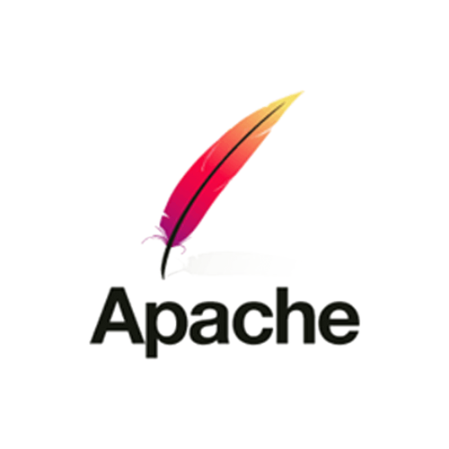
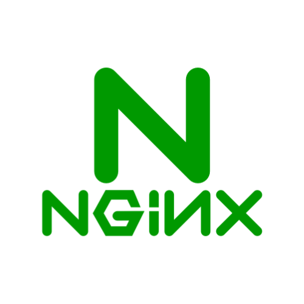
IAC Tools
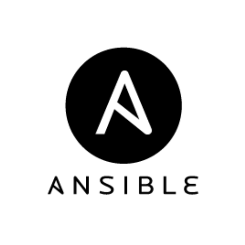
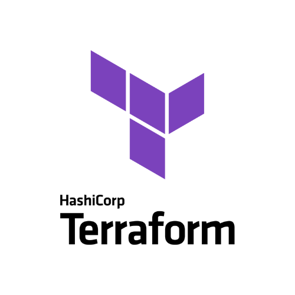
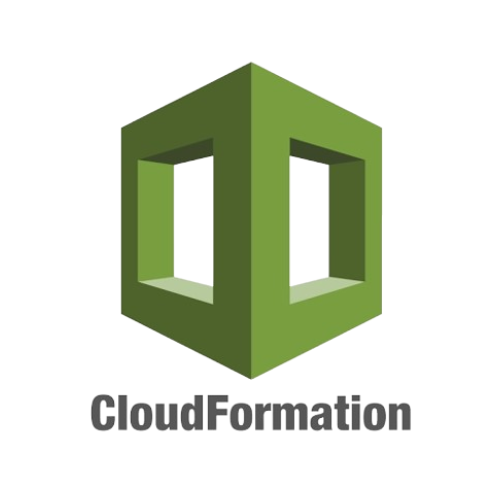
CI/CD Tools
Scripting Language

Operating Systems
Version Control Tools
Database
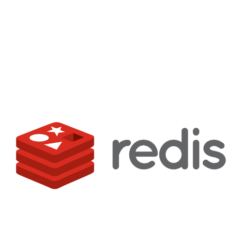
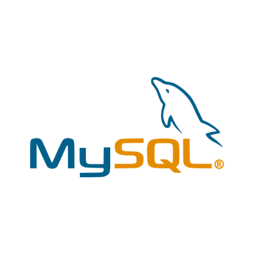
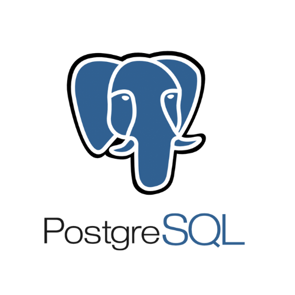
Security and Compliance Tools
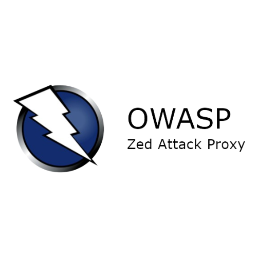
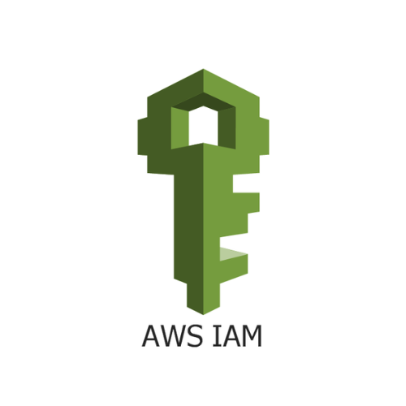
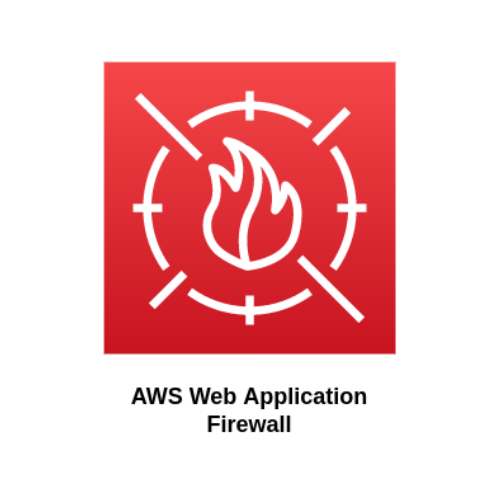
Monitoring and Logging Tools
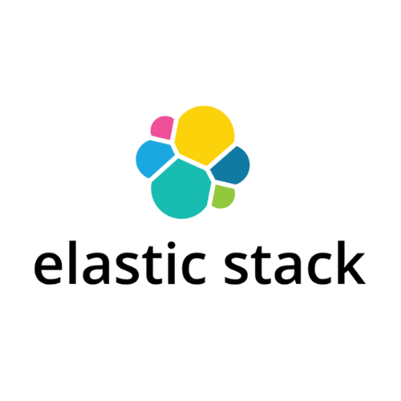
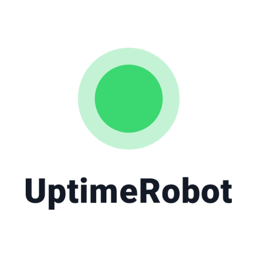
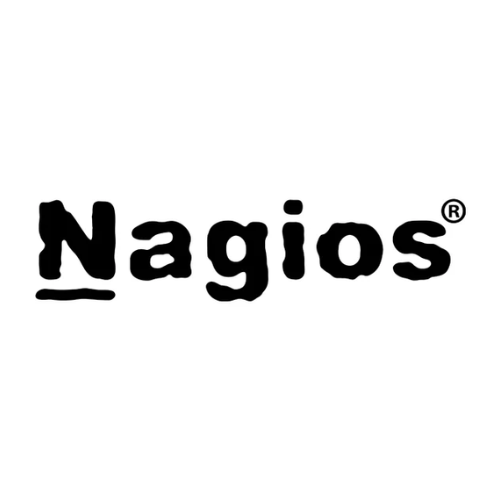
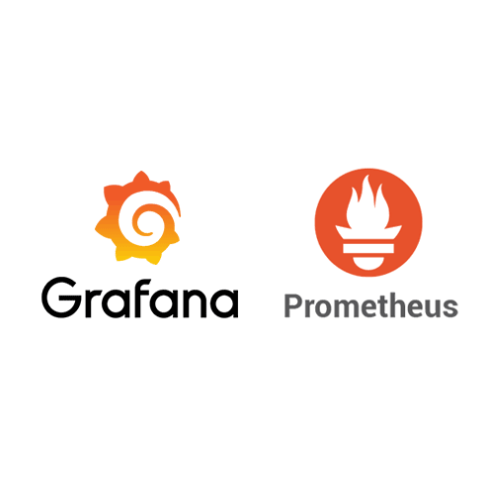
Containerization & Container Orchestration Tools
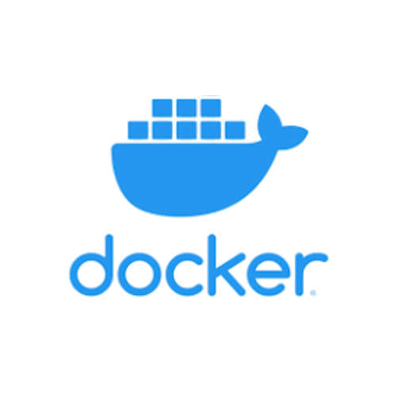
 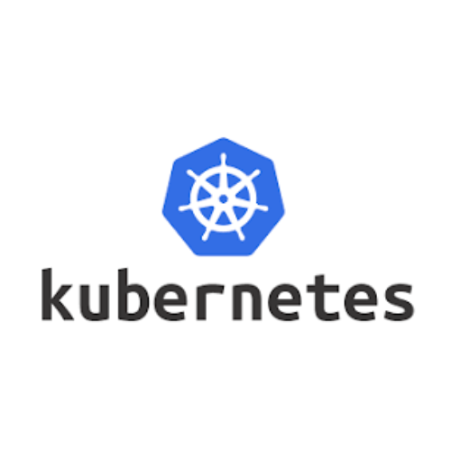
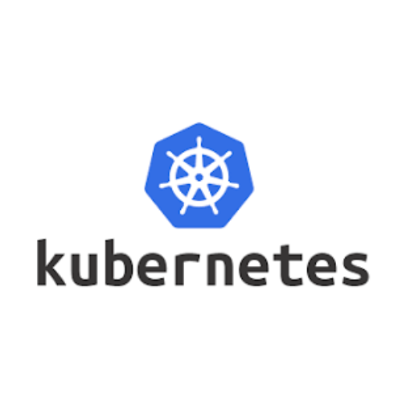
Certificates